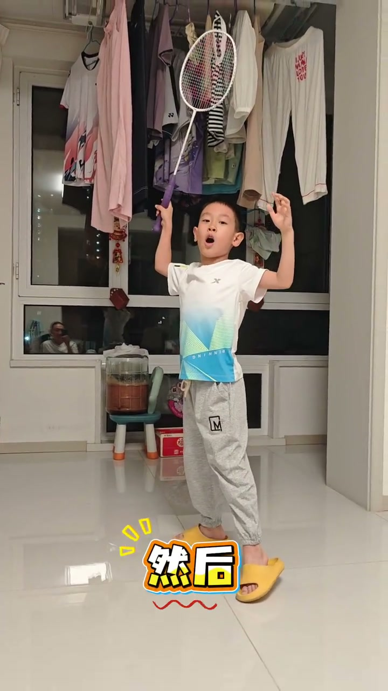
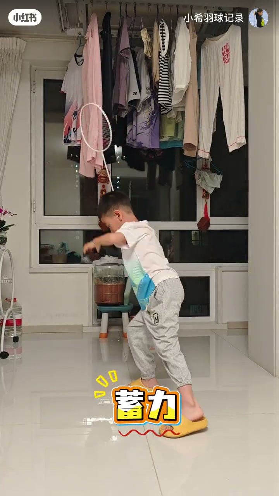
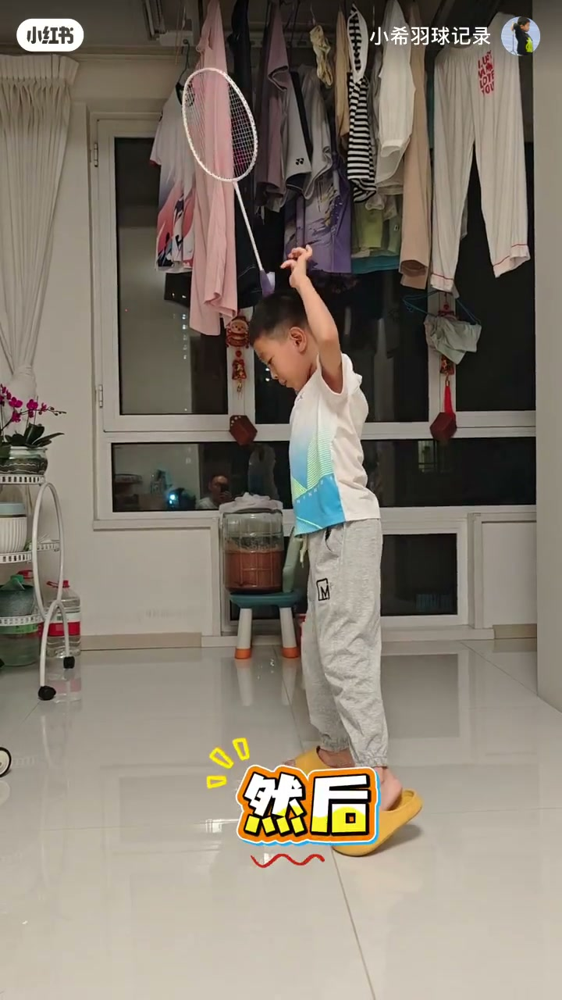
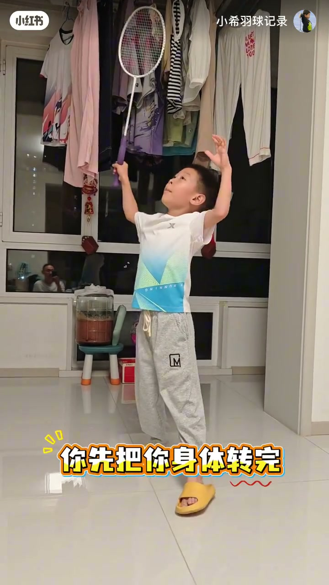

内容要点
小希羽球记录第32集在家里带幼儿园小朋友练「先顶胯再挥拍」。教练把动作拆成胯→腿扭→腰的口令链，反复纠正「刚转一点就挥」和「胯跨太大对不上拍」两类问题，最终落点是：你先把身体转完，再去挥拍。
知识结构
先胯、再腿扭上去、然后再腰；不能刚转一下就动手，转错了要收回重来。
腿动起来、发力起来之后，不要乱扯太狠，胯也不要顶得过大，否则对不上拍；宁可小一点、稍减力。
再走一遍胯→腿→腰；孩子抢先挥拍时教练叫停：先把身体转完，你再去。
顶胯转体对幼儿不是「转得越大越好」，而是两条纪律：顺序上身体转完再挥拍；幅度上胯的行程要能对上击球点。口令链胯→腿→腰，比只喊「用力转」更容易执行。
00:00-00:18口令链：胯 → 腿扭 → 腰
教练先把动作念成短口令：胯，腿扭上去，然后再腰。关键警告是「不能刚转一个」——刚转一点就挥，链条会断。孩子出现「我先回、我再转」的混乱时，教练立刻说「不对」，并把重点拉回「我先跟你讲……是腿、腿动」。
画面里小朋友穿黄拖鞋、白蓝T恤，在晾衣架前的瓷砖地上持白拍练习；约 00:05 出现字幕「然后」，标出动作衔接点。这是居家少儿羽毛球记录，重点在身体顺序，不在球馆对抗。

00:18-00:34胯不要太大：对不上拍就缩小行程
发力起来之后，教练连续踩刹车：「也不用乱扯太狠」「也不用胯太大」。太大的后果说得很白话——「你也对不上拍对吧」。解决办法不是再加力，而是「你小一点」「稍微去一点力」。
约 00:18 的截图里，孩子侧身引拍、后脚踮起，底部黄字「蓄力」：这正是顶胯转体前的加载姿态。教学意图是让胯的行程服务击球点，而不是把「顶胯」做成夸张表演。

00:34-00:53重做一遍：身体转完，你再去
后半段几乎完整复读口令链：然后，胯，腿扭上去，然后再腰；再次出现「不能刚转一个」「我先回／我再转／不对」的纠错循环。
收束金句落在字幕上：「你先把你身体转完，你再去。」「转完」被红线强调。片尾「二三」像练球计数口令。整集的核心不是花样技术，而是把转体完成度放到挥拍前面。


完整转录（31段）
以下文本由 Whisper medium 模型自动转录，可能存在少量识别误差，已尽可能修正。
跨
腿扭上去
然后再腰
不能刚转一个
我先回
我再转
不对
我先跟你讲
逗旧的地方
是腿
腿动
屁力
大之后也不用乱扯太狠
大之后也不用跨太大
太大了你
你也逗不上旧对吧
你小一点
再不用这么
这样
稍微去一点力
然后
跨
腿扭上去
然后再腰
不能刚转一个
我先回
我再转
不对
你先把你这身体转完
你再去
二三